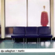

| Pic // | Name // | In Brief // |
|

| DJs Callaghan and Martin | so what are we on about? |
|
| Chloe Nicolet-dit-felix, photographer. | This is Chloe's work "konichiwa". |
|
| Claudia Chidiac's 'Asylum' | 'Asylum' was an Urban Theatre Projects site-based performance about refugees. |
|
| Tristan Mules, Guest Alchemist (SBS Radio) | Here's a sampler track listing for my Alchemy session. |

| Drew Wootton, film maker. | Sedon Pepper and I work collabratively on most projects we do. |
|
| Chris Lai, Cantonese Language Program, SBS Radio. | Chris Lai is an illustrator and animator. |
|
| Kate Rohde | My most recent work involves constructing a room that resembles a cabin.. |
|
| Scott Cooke, Guest Alchemist (SBS Radio) | I am a Drum & Bass DJ. |
|
| Joel Ellis, Guest Alchemist. | Hmmmm, our hour on Alchemy, well, it's all very hush hush.. |
|
| DJ Design and DJ Trent, Guest Alchemists. | Some say we're loud - we like to think that we're proud. |
|
| Mei-Hsuan Ting (SBS Radio Japanese Program) | Born in Taiwan, raised in New Zealand and now living in Australia. |
|
| spareparts industries | clothing label : spareparts laboratories |
|
| Ben Whitaker, Guest Alchemist (SBS Radio) | Set List for 'Alchemy'... |
|
| Seddon Pepper, film maker. | Seddon works with Drew Wootton on film and video projects. |
|
| elle rollo, Guest Alchemist (SBS Radio). | I want people to realise that Drum & Bass isn't just dark and dangerous. |